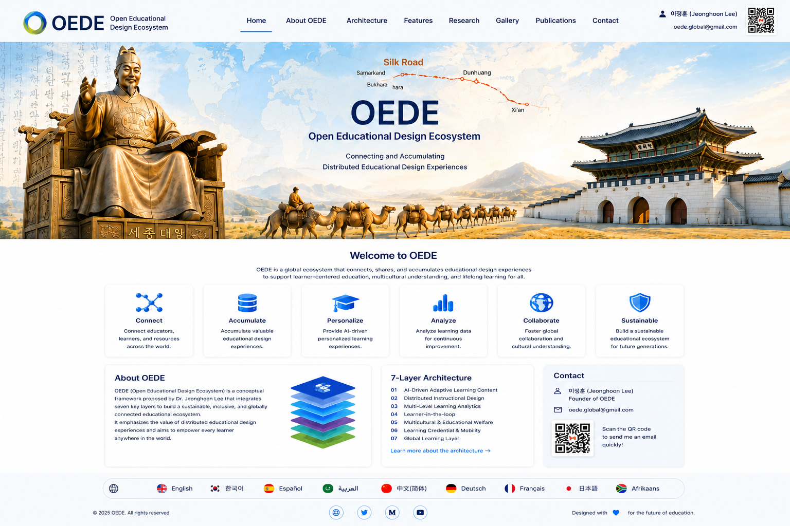

OEDE
Open EducationalDesign Ecosystem
👤 이정훈 (Junghoon Lee)
yes@dgu.edu
yes@dgu.edu

OEDE reframes future education as a connected ecosystem of educational design experiences rather than a simple extension of digital textbooks or AI tools.
OEDE begins from the idea that education already contains abundant knowledge in teachers’ practices, learners’ experiences, school communities, mentor networks, and local educational cultures. The challenge is to connect, preserve, and reuse these experiences as shared educational assets.
Rather than opposing existing school systems, OEDE seeks to complement them by supporting learning continuity, shared responsibility, and negotiated participation across diverse contexts.

OEDE connects teachers, learners, mentors, families, welfare services, communities, and AI-supported learning resources.
Educational design experiences are accumulated as reusable and adaptable assets rather than disappearing after a single classroom use.
Learning can continue across schools, regions, countries, and life circumstances through portable records and globally accessible resources.